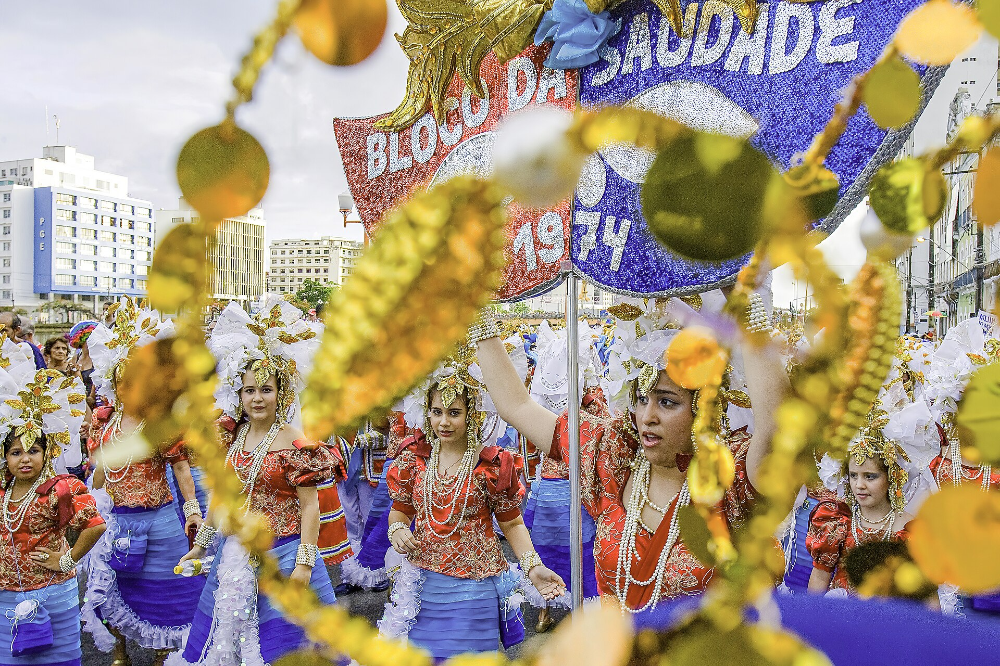
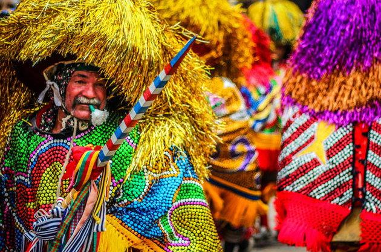
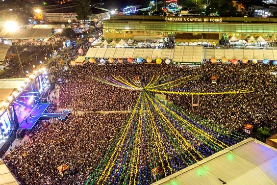
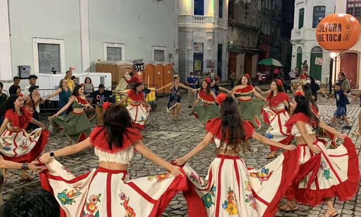

01
Carnaval
O Carnaval pernambucano é conhecido por seus blocos de rua, bonecos gigantes, frevo e maracatu. Olinda e Recife são importantes centros dessa celebração.
Nossa cultura
Pernambuco possui uma grande diversidade cultural. Suas festas populares reúnem música, dança, cores e manifestações que fazem parte da história do estado.
Manifestações culturais

O Carnaval pernambucano é conhecido por seus blocos de rua, bonecos gigantes, frevo e maracatu. Olinda e Recife são importantes centros dessa celebração.

O maracatu é uma manifestação cultural afro-brasileira marcada por música, cortejo, personagens e vestimentas coloridas.

As festas juninas são celebradas com quadrilhas, forró, comidas típicas, fogueiras e muita música. Caruaru é conhecida por seus festejos.

A ciranda é uma dança popular em que participantes formam uma roda e dançam ao som de cantigas e instrumentos tradicionais.
Conhecimento
Veja algumas características das tradições pernambucanas.
| Manifestação | Características | Local de destaque |
|---|---|---|
| Carnaval | Blocos, frevo e bonecos gigantes | Recife e Olinda |
| Maracatu | Cortejos, música e personagens | Zona da Mata e Recife |
| Festas Juninas | Forró, quadrilhas e comidas típicas | Caruaru |
| Ciranda | Dança coletiva em roda | Litoral pernambucano |
Continue explorando
Descubra a história de uma das manifestações culturais mais conhecidas de Pernambuco.
Conheça o Frevo